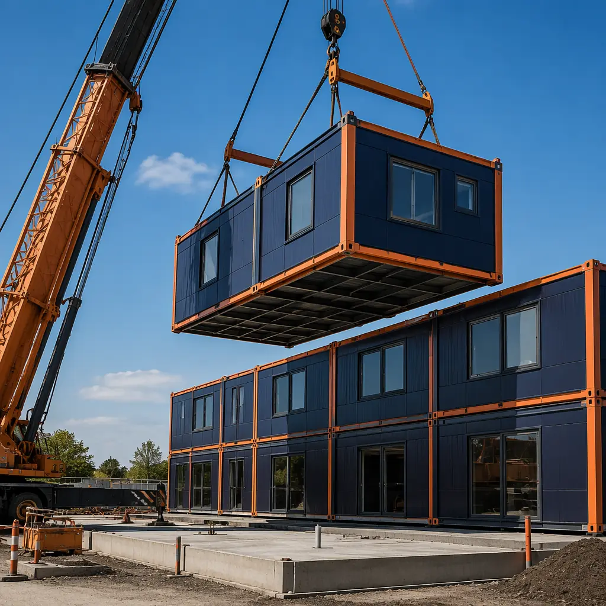
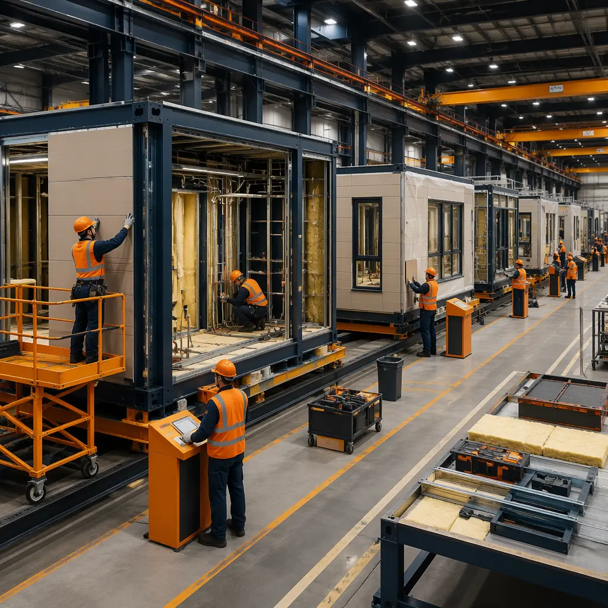
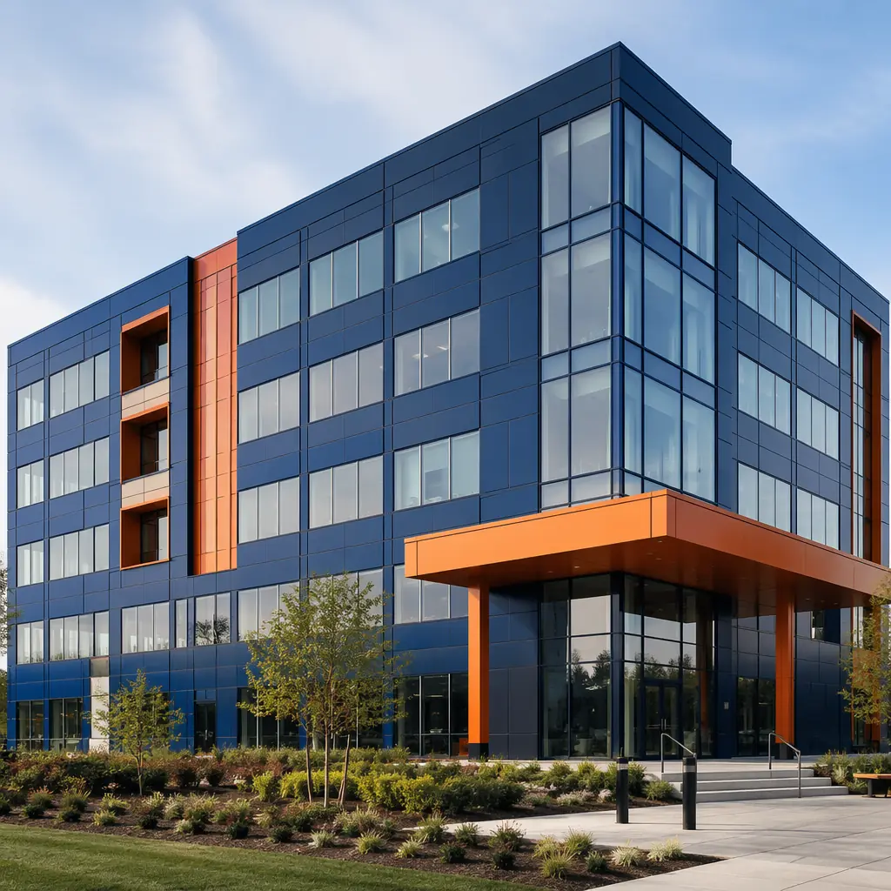
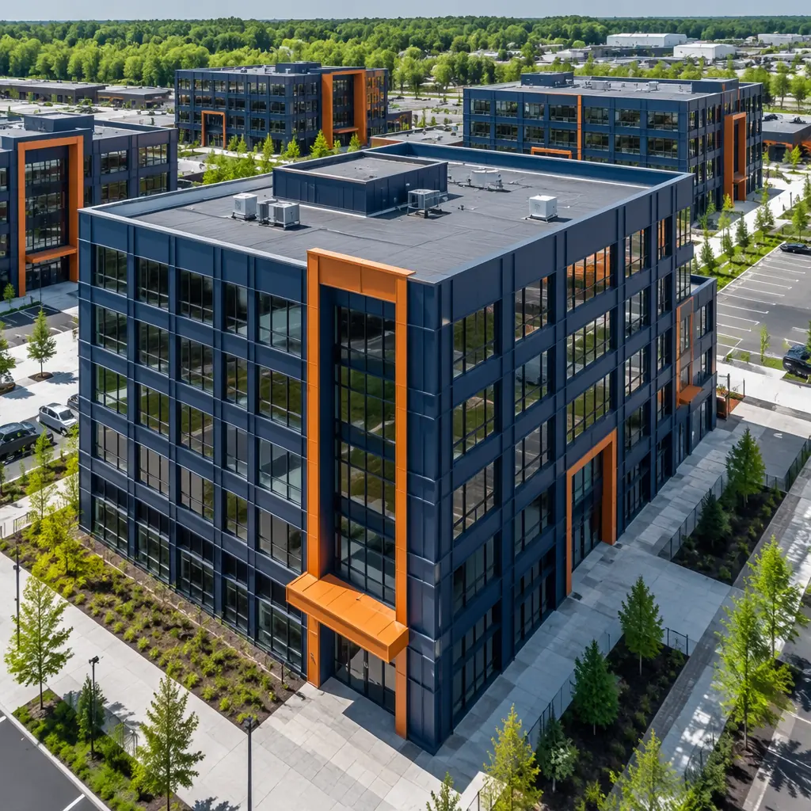

Two construction methods are reshaping mid-rise commercial development faster than any others: modular construction and Insulated Concrete Forms (ICF). Both promise speed advantages over traditional stick-built. Both claim superior energy performance. And both are increasingly specified by developers who have moved past the “we’ve always done it this way” era of construction procurement. But the two methods achieve their results through fundamentally different mechanisms — and the choice between them has consequences that ripple through project timeline, cost structure, quality control, and long-term building performance. This comparison examines where each method excels, where each falls short, and how to decide which one fits your specific project.

The Core Difference — Factory Assembly vs Field-Pour
The fundamental distinction between modular and ICF construction is where the building takes shape. Modular construction assembles 80–90% of the building inside a factory: steel frames are welded, wall panels are installed, plumbing and electrical are roughed in, windows are glazed, and finishes are applied — all under roof, on a production line, independent of weather. The completed modules are then transported to the site and craned onto a prepared foundation, where they are connected and commissioned in a fraction of the time required for conventional construction.
ICF construction, by contrast, assembles the building on site — but using a system that is faster and more thermally efficient than stick-framing. Expanded polystyrene (EPS) or extruded polystyrene (XPS) foam blocks are stacked like hollow LEGO bricks to form the building’s walls. Steel reinforcing bar is placed inside the hollow cores, and concrete is pumped into the forms. The result is a monolithic, steel-reinforced concrete wall with continuous insulation on both sides — an R-value of R-22 to R-26+ without thermal bridging, compared to R-13 to R-19 for a typical wood-framed wall with fiberglass batts.
The critical operational difference: modular construction is weather-independent for 80–90% of the build cycle. ICF construction, despite being faster than stick-built, is still entirely weather-dependent — concrete cannot be pumped in freezing temperatures without heating and hoarding, EPS forms cannot be stacked safely in high winds, and rain can flood the form cavities before concrete placement. For a developer building in the Upper Midwest in November or the Pacific Northwest in February, this weather dependency can add 4–8 weeks to the ICF construction schedule — weeks that modular construction does not lose, because the modules are being assembled simultaneously inside a climate-controlled factory while the foundation is poured on site.
Construction Speed — Timeline Comparison for a 50-Unit Apartment Building
For a 50-unit, four-story apartment building of approximately 45,000 sq ft, the construction timeline difference between modular and ICF is substantial:
| Phase | Modular | ICF | Traditional Stick-Built |
|---|---|---|---|
| Foundation | 4–6 weeks | 4–6 weeks | 4–6 weeks |
| Structure / Enclosure | 8–12 weeks (factory) + 2–3 weeks (site set) | 12–16 weeks (site) | 16–22 weeks |
| MEP Rough-In | Included in factory phase | 6–10 weeks | 8–12 weeks |
| Finishes | Included in factory phase | 6–10 weeks | 8–12 weeks |
| Total (foundation to occupancy) | 6–8 months | 12–16 months | 14–18 months |
The modular advantage is driven by parallelization: while the foundation is being poured and cured, modules are being assembled inside the factory. ICF construction is sequential by necessity — you cannot start MEP rough-in until the walls are poured and cured, and you cannot start finishes until MEP is complete. For modular apartment developments where carrying costs on construction loans run $15,000–$25,000 per month, the 6–8 month schedule acceleration can save $90,000–$200,000 in interest alone — before accounting for earlier rental income.

Cost Analysis — Per Square Foot Breakdown for Both Methods
Cost comparisons between modular and ICF must account for the different scope boundaries of each method. Modular costs typically include structure, enclosure, MEP rough-in, and interior finishes — a more complete scope than ICF, which typically covers only the wall assembly (thermal envelope) with structural concrete core. Comparing a modular “finished” square foot cost to an ICF “shell” square foot cost is misleading; the table below normalizes to comparable scope.
| Cost Category | Modular (per sq ft) | ICF (per sq ft) | Traditional (per sq ft) |
|---|---|---|---|
| Structural frame & enclosure | $80–120 | $65–95 (ICF wall system only) | $55–75 |
| MEP rough-in | Included above | $30–50 | $35–55 |
| Interior finishes | Included above | $40–70 | $45–75 |
| Total (normalized scope) | $180–280 | $175–265 | $190–280 |
The headline finding: at normalized scope, modular and ICF construction fall within overlapping cost ranges for mid-rise commercial projects. The cost advantage shifts depending on project specifics. For a detailed breakdown of modular pricing by building type, see our modular construction cost guide. ICF tends to be more cost-competitive for single-family and low-rise (1–3 story) projects where the wall area-to-floor area ratio favors the ICF system. Modular construction gains cost advantage at 3+ stories and 20+ units, where the factory assembly line efficiency compounds across larger module counts. The crossover point — where modular’s total installed cost falls below ICF’s — is typically at the 30–40 unit threshold for multi-family projects.
Thermal Performance & Energy Efficiency
ICF construction holds a clear advantage in continuous insulation performance. An ICF wall with 2.5” of EPS on each side of a 6” concrete core delivers R-22 to R-26 with effectively zero thermal bridging — the concrete web connectors that hold the EPS forms together represent less than 0.5% of the wall area. In contrast, a steel-framed modular wall with R-19 fiberglass batts between 3-5/8” steel studs at 16” o.c. loses 40–55% of its nominal R-value to thermal bridging through the steel studs, yielding an effective R-value of R-9 to R-13. This is the single largest performance gap between the two methods.
However, modular construction can close this gap through continuous exterior insulation — typically 1–2” of rigid mineral wool or polyisocyanurate board applied to the exterior face of the steel studs, inside the factory. With 1.5” of continuous mineral wool (R-6.3) over R-19 batts, the effective assembly R-value rises to R-18–20 — competitive with ICF for most climate zones. This continuous insulation layer is applied under factory conditions, ensuring full coverage without the gaps and compression that plague field-applied exterior insulation. For projects targeting modular building energy efficiency or passive house standards, the factory environment enables a level of air-sealing precision — typically 0.6–1.5 ACH50 for a completed module — that is difficult to achieve with ICF field assembly, where the interface between wall pours, floor decks, and roof connections creates multiple air leakage pathways.
Fire Safety & Structural Durability
Both methods offer fire safety advantages over wood-frame construction, but through different mechanisms. ICF walls achieve fire ratings through the concrete core: a 6” flat ICF wall typically achieves a 3–4 hour fire resistance rating under ASTM E119, with the EPS foam protected by the concrete mass and 1/2” gypsum board on each face. The concrete does not burn, does not contribute fuel, and maintains structural integrity far longer than steel or wood in fire conditions.
Steel-framed modular construction achieves fire ratings through tested assemblies: a 1-hour wall (UL U465 equivalent) with one layer of 5/8” Type X gypsum board on each side of steel studs, a 2-hour wall (UL V497 equivalent) with two layers, and a 3-hour assembly with three or more layers. These ratings are achieved at the assembly level — not just the wall, but the floor, ceiling, and module-to-module joint systems. As discussed in our modular fire safety guide, each fire-rated module arrives on site with third-party inspection documentation confirming the assembly was built to the certified UL design — a level of fire safety documentation that ICF field-pour cannot match, because the concrete placement, rebar positioning, and form alignment are inspected intermittently by the municipal building inspector, not continuously by a factory-based third-party agency.

Quality Control — Factory Inspection vs Site Inspection
The quality control systems for modular and ICF construction operate under fundamentally different verification models. Modular manufacturing is regulated under ICC/MBI Standard 1200 and 1205, which require third-party inspection agencies to verify every stage of module production: framing, rough-in, insulation, fire-resistant construction, and final finish. Each module receives a state-issued insignia or label confirming compliance. The inspection record follows the module for the life of the building.
ICF construction quality is verified through the standard municipal building inspection process — typically one to three site visits during the wall construction phase: a pre-pour inspection to verify rebar placement and form alignment, and a post-pour inspection to confirm the concrete has cured without voids or honeycombing. This inspection model leaves significant quality variables to the installer: concrete slump at the time of pour (which affects consolidation in the form cavities), vibration technique (which affects void formation around rebar and at window/door bucks), and ambient temperature during curing (which affects concrete strength development). An ICF wall with 5% void area — not uncommon in field-poured ICF construction, particularly around window and door openings — loses proportional thermal and structural performance that no amount of post-construction inspection can recover, because the concrete is already encased in EPS.
For developers who have worked with evaluating modular construction partners, this quality control distinction is not theoretical — it translates directly to construction defect risk, warranty claims, and long-term building performance. A modular building with third-party factory inspection at every production stage has a documented quality record. An ICF building has, at best, intermittent field inspection reports. The difference matters most when something goes wrong — and in construction, something always goes wrong.
Which Method Fits Your Project? A Decision Framework
The choice between modular and ICF construction is not about which method is better in the abstract — it is about which method aligns with your specific project parameters. Use the following framework to guide your decision:
| If Your Project… | Best Method | Why |
|---|---|---|
| Is 30+ units, multi-story | Modular | Factory efficiency scales with unit count; parallel construction compresses schedule |
| Is 1–10 units, low-rise | ICF | Lower mobilization cost; wall-area ratio favors ICF at small scale |
| Has aggressive timeline (<12 months) | Modular | 6–8 months vs 12–16 months; weather-independent factory production |
| Prioritizes maximum thermal performance | ICF | R-22–26 continuous with zero thermal bridging; passive house achievable without exterior insulation |
| Needs documented fire safety certification trail | Modular | UL assembly-level certification per module; third-party factory inspection records |
| Is in extreme climate (Arctic or tropical) | Modular | Factory climate control eliminates weather-related construction delays |
These are not absolute rules — every project has unique constraints that may shift the balance. The developer who understands the mechanisms behind each method’s advantages — factory parallelization for modular, continuous thermal envelope for ICF — can make an informed decision rather than defaulting to whichever method their contractor happens to prefer. For a deeper comparison of modular against other construction methods, see our analyses of modular vs precast concrete and modular vs SIP construction.
Modular and ICF are not competing solutions to the same problem — they are optimizing for different priorities. Modular optimizes for speed, repeatability, and quality control. ICF optimizes for thermal mass, continuous insulation, and structural simplicity. The right choice depends on which of those priorities matters most to your specific project.
